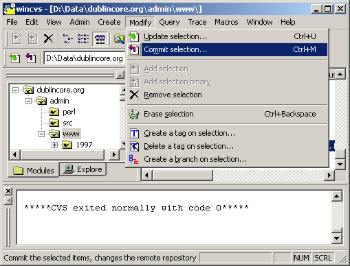
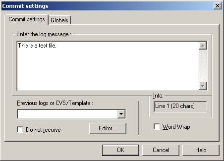
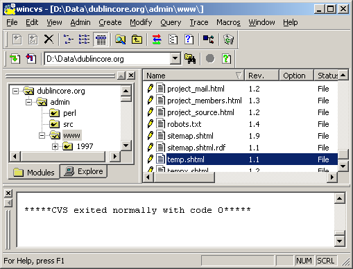
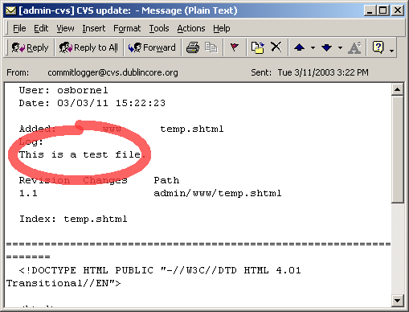

Below is an example of the email message that is sent after a file has been committed, as shown in Microsoft Outlook.
As you can see, the comments we added in the Commit settings dialog display in the email message.
| 1 | A file's icon will display as a red page with a letter 'A' if the file has been edited but has not been committed. |
|
|
| 2 | To commit a file, select it. Then choose Modify -> Commit selection. |
|  | |
| 3 | The Commit settings dialog will appear. Enter the log message (editing comments) and click the OK button. |
|  | |
| 4 | Once the file has been committed, the file's icon will display as a white document. |
|  | |
| 5 |
Below is an example of the email message that is sent after a file has been committed, as shown in Microsoft Outlook. As you can see, the comments we added in the Commit settings dialog display in the email message. |
|  | |
| If you have completed your edits, you may logout. |